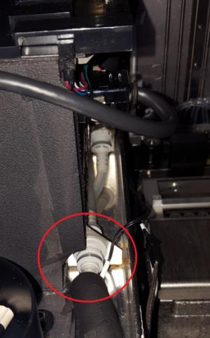
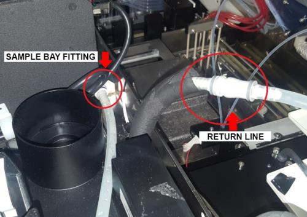
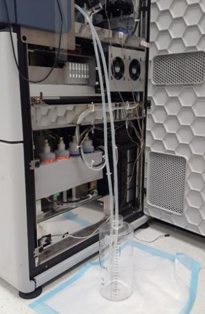
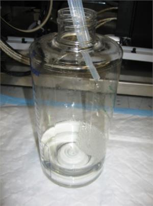
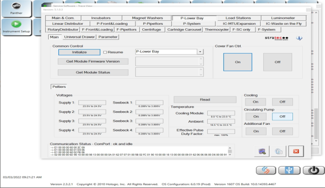
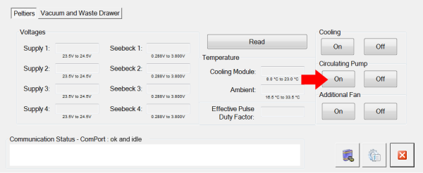
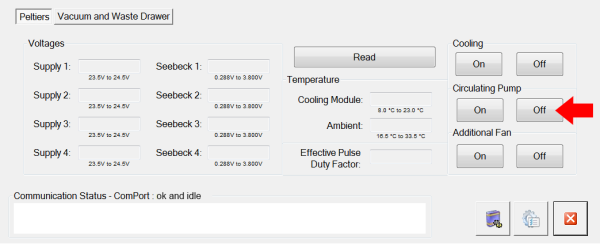

Draining the Cooling Module (Single and Dual Fan)
This procedure applies to both cooling module modules (dual fan, black foam or single fan, orange foam).
Parts and Materials Required
- Proper PPE
- 2-liter beaker for fluid draining
- Absorbent pad
- Cooling Module Drain/Fill Tube Kit
Time Required
- Approximately 20 minutes
Procedure
All screenshots taken from Service Software Version 4.0.7.0. Additionally, some screenshots are taken from Service Software disconnected from a Panther System and shows a Communication Status error. Your screen may vary by software version and Connection Status.
- Put on proper PPE.
- Open the right side panel of the system.
 Disconnect the fluid return line fitting from the output of the Sample Bay, located on the right, rear of the bay (nearest the system side panel). Push the fitting in and twist counterclockwise to disconnect.
Disconnect the fluid return line fitting from the output of the Sample Bay, located on the right, rear of the bay (nearest the system side panel). Push the fitting in and twist counterclockwise to disconnect.
- Connect the fill/drain tubes from the Fill Kit to both the Sample Bay fitting and the return line fitting. Push fittings in and twist clockwise to connect. Make sure the fittings are fully connected.

- Route the fill/drain tubing to a 2-liter container placed on an absorbent pad on the floor beside the system.

- Position the tubing so that the ends of the tubing are near the top of the container.

- Start Service Software and click the P-Lower Bay tab. See image in Step 8 below for reference.
- Select P-Lower Bay from the dropdown and click Initialize.

- Under Cooling Circulating Pump, click On. The cooling fluid pumps into the container from the cooling system. When full, the cooling system contains approximately 1200 mL of cooling fluid.

- When all of the fluid is pumped from the system, turn Off the circulating pump using Service Software.

- Verify that the Cooling Module reservoir is empty by visually inspecting the sight glass. There should be no fluid visible.
- Disconnect and remove the fill/drain tubing from the Sample Bay output fitting and fluid return line. Push the fittings in and twist counterclockwise to disconnect.
- Reconnect the fluid return line fitting to the output fitting of the Sample Bay. Push the fitting in and twist clockwise to connect. Make sure the fitting is fully connected.
- Close the right side panel of the system.
 button at the top of the page to send feedback, comments, or change requests.
button at the top of the page to send feedback, comments, or change requests.{kind=link}